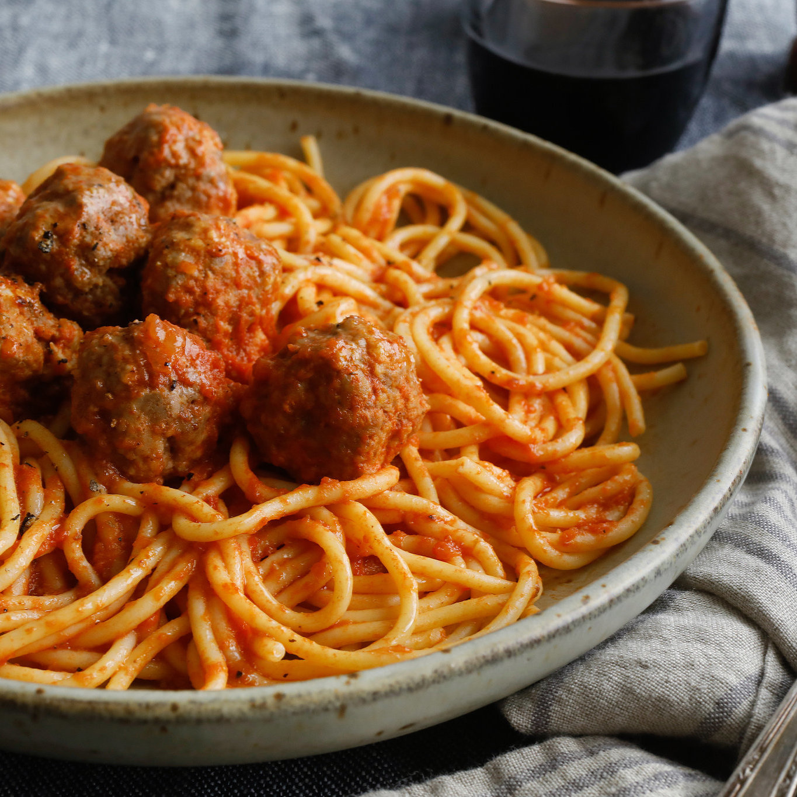

Description
This is an Italian-style pasta sauce with homemade meatballs that's cooked
slowly over low heat for an intense tomato flavor. It's easy to make the
spaghetti sauce ahead of time; gently reheat and add meatballs 30 minutes
before you're ready to serve with your favorite pasta.
Whether you're looking for a spaghetti sauce with meatballs for your next
spaghetti night, a meatball sub, or any other Italian recipe, you have
just found the best recipe on the internet. This simple recipe shows you
how to make homemade meatballs with a delicious and fresh tomato sauce.
Ingredients
Meatballs:
- 1 pound lean ground beef
- 1 cup fresh bread crumbs
- 1 tablespoon grated Parmesan cheese
- 1/4 teaspoon ground black pepper
- 1/8 teaspoon garlic powder
- 1 egg, beaten
Sauce:
- 3/4 cup chopped onion
- 5 cloves garlic, minced
- ¼ cup olive oil
- 2 (28 ounce) cans whole peeled tomatoes
- 2 teaspoons salt
- 1 teaspoon white sugar
- 1 bay leaf
- 1 (6 ounce) can tomato paste
- ¾ teaspoon dried basil
- ½ teaspoon ground black pepper
Steps:
- Gather all ingredients.
-
In a large bowl, combine ground beef, bread crumbs, parsley, Parmesan,
1/4 teaspoon black pepper, garlic powder and beaten egg. Mix well and
form into 12 balls. Store, covered, in refrigerator until needed.
-
In a large saucepan over medium heat, saute onion and garlic in olive
oil until onion is translucent.
-
Stir in tomatoes, salt, sugar and bay leaf. Cover, reduce heat to low,
and simmer 90 minutes.
-
Stir in tomato paste, basil, 1/2 teaspoon pepper and meatballs and
simmer 30 minutes more.
- Serve hot and enjoy!